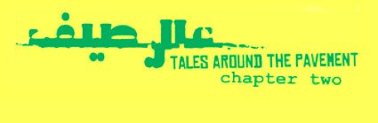

By Ismail Fayed

Image of logo of the event, retrieved from Khatt Foundation. All rights reserved to the creators and CIC.
In the continuing art project initiated by CIC (Contemporary Image Collective), curators Alya Hamza and Edit Molnar introduced more artistic presentations of the dynamics of a public space in the urban context of Cairo. This is their second installment of last year's much talked-about exhibition, "Tales Around the Pavement".
The tales that we witness everyday around the streets and pavements of Cairo are scrutinized by the artists and presented through various media and in different forms, each reflecting on the subtle and complex relationship the residents have with each other and with the space they occupy. In this stage of the program, the work of six artists - Hany Rashed, Katarina Sevic, Mahmoud Khaled, Othman Bozkurt, Randa Shaath and Tarek Hefny - is exhibited using different media.
The project presents the work of the first artist in residency at CIC, Katarina Sevic, and Turkish artist Othman Bozkurt, as part of integrating different perspectives on the interaction between history, politics and culture in an urban space. The work of Randa Shaath seems to be the defining keynote for the project: The difficulty of faithfully capturing the complex relationship between people and the space and between the people and each other. In a brief description of her work, she points out how "unfinished" her work is. How it risks emphasizing the poetics of poverty, cruelty and struggle that characterize everyday life in Cairo.
While such critical awareness of a subject gives Shaath credibility and authenticity, it also shows how easy it is to fall into the trap of being aesthetically bound. Shaath was held back by what she has observed as violence and strife; still her images betrayed a sense of extraordinary beauty. The savage, mysterious beauty of everyday Cairo life is demonstrated in the randomness of the spaces lying within public spaces, the dignity of marginalized subjects, the so-called "unvarnished beauty" of rundown architectural relics and vestiges of bygone times. If Cairo is a city burdened by its history and random urbanization, it's also a space susceptible to beauty.
Artist Katarina Sevic takes things further by constructing a narrative of her own observations. In a conceptually exceptional work, Sevic creates a medium through which the viewers can critically question reality. Building on her reading of the novel "News from Nowhere" by William Morris - whose events are set in a post-communist/socialist utopia - Sevic explains through her painting how she confronted a reality of Cairo as a post-socialist state on its way to a capitalist market. With an entire wall of that personal narrative aided by a precise choice of photos, Sevic shows how concepts like economy, commodities, education, gender and private property control and shape the foundation of a space.
Artist Mahmoud Khaled examines how the perspective and the position of a subject changes within a given space. Khaled created a pattern of serialized photos of different major urban spaces, Tahrir Square, Central Station and boats sailing across the Nile. The perspective continuously changes, revealing different visions of the space and its occupants. Khaled's work had the promise of altering how we regard spaces that are often "taken-for-granted" had he not chosen to place instructions on every row of images, listing the impressions viewers should feel and highlighting the subjects of his painting with a yellow circle.
Tarek Hefny reinvents our understanding of the objects of a public space through digital photography. In a series of digitally-edited photos Hefny manipulates road signs, pavement blocks and street benches into newly defined objects: a modern sofa, a coffee table and a seating chair. Hefny wants to direct the attention of his audiences to the mechanism by which these objects form urban spaces. These objects, according to his work, should not be taken for what they seem to be on the surface, but rather the possibility of what they can be.
Hany Rashed's collage spans three continents - from India, Latin America, Europe and Egypt - reflecting the effect of time on urban spaces. There are layers upon layers that crowd his photos, some are well-integrated while some feel detached; both forms stand out and borderline the absurd.
The work of the six artists who all examined the multitude of relationships that govern, define and redefine urban space, show how struggle, poverty and historical legacy can be captured between wistful beauty and heartbreaking despair.